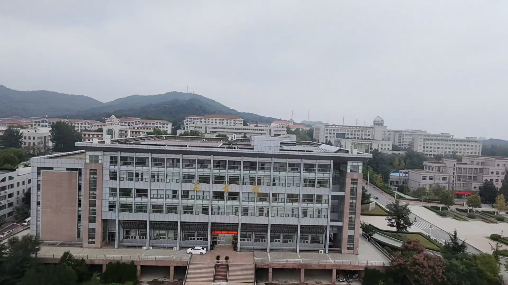
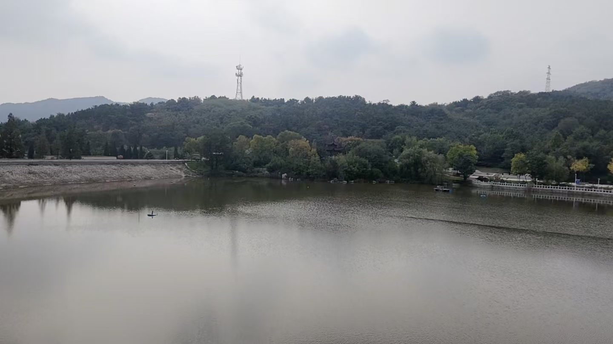
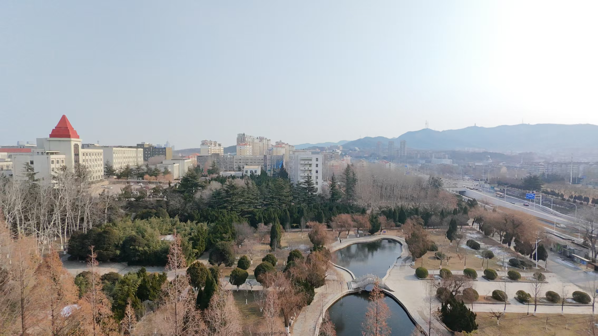
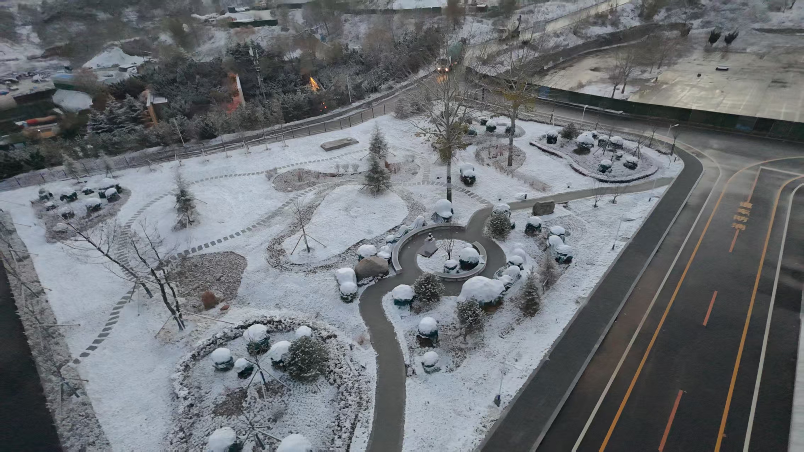

航拍视角下，镜心湖仿佛从城市的喧嚣中悄然剥离，独自静卧。葱茏的园林是它温软的心，即便在冬日，那深深浅浅的绿也未曾褪尽，像一层厚实的绒毯，包裹着静谧。林间疏密有致，常青的树冠如凝固的碧波，坚守着四季不败的诺言。园林中央，一汪湖水澄澈如镜，安然盛着天空与树影的全部秘密。一弯小桥如玉带，轻轻束在湖的腰际，弧线优雅，悄然连接着此岸与彼岸，仿佛连结了两种不同节奏的呼吸。视线轻移，园林一侧，楼宇的线条悄然浮现。其间一抹醒目的红，是尖顶建筑跳动的音符，在素雅的底色上，奏出一记明亮的重音。更远处，山脉的轮廓淡如烟霭，层层叠向天际，与那一片无垠的淡蓝穹苍温柔相接。由近及远的绿、红、蓝，交织成一首宁静的视觉诗，让人隔着画面，仿佛也能呼吸到那份清冽、安详的空气。
这秋水是一面被时间磨得温润的灰镜，收容了整个世界。天空并非澄澈的蓝，而是一张洇湿的宣纸，漫着淡灰的云影，都沉沉地、完整地印在湖心里。水色是那种含蓄的灰褐，是土地与天色长久摩挲后的调和，平滑得没有一丝皱褶，仿佛岁月在此地也放轻了脚步。湖心一点，是小舟，是舟上那粒小小的、静坐的人影。他成了一枚安放的标点，一个不惊扰任何波纹的逗点，让这浩渺的空寂有了呼吸的节奏。近处的岸，是碎石垒出的分界，工整而沉默；远处，林子是未褪尽的绿，间杂着几树早慧的黄，像谁不经意间泼洒的颜料，深深浅浅地洇开。林梢之上，两座铁塔的线条瘦硬地切入天际，是这山水长卷里一行现代的诗注，带着文明的棱角，却意外地融入了这份苍茫。一切都在这里静下来了。光，是含着的；风，想必也是凝住的。独坐的人，看水，或是看倒映在水里的、那有了铁塔轮廓的远山，他便也成了风景的一部分，成了这秋日午后，最深沉的一个注解。
雪后的世界，从高处看，便是一页缓缓摊开的素帛。那公园是纸上最柔软的部分，所有的棱角——蜿蜒的小径、圆形的灌丛、交错的枝条——都被新雪以同一种丰腴的弧度抹平，成了连绵的、毛茸茸的白色丘陵，仿佛大地均匀的呼吸。一条柏油路利落地从旁划过，界开了这片蓬松的梦境。路面是深色的溪流，上面两道鲜亮的交通标线——一黄，一橙——成了这清冷画卷上最跳跃的笔触，像两弦被拉直了的、寂静的音。它们指向的远方，低矮的屋舍戴着一顶顶厚厚的白帽，静静地蹲伏着。更远处，树林已分不出棵数，只是墨绿与苍黑交融的一片绒毯，边缘处，一抹极淡的、橙红的微光，或许是远方未熄的灯，也或许是冬日迟迟不肯落下的日晷，在云霭后投来温存的一瞥。万籁在此刻被雪吸了音，只余下辽阔的、明亮的岑寂。寒冷是洁净的，空气是清冽的，这俯瞰的视角，让人仿佛也获得了天空那般沉默而宽广的温柔。

乳子湖

镜心湖

雪园